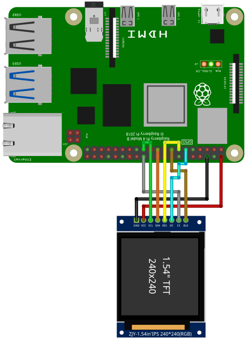

The ST7789 is a controller for RGB Displays. Data is transferred using the SPI interface. Displays are available in different sizes and amount of pixels. Please setup SPI before using the display.
To use the ST7789, import the library st7789
import st7789Open()
Open(LCD_WIDTH)
Open(LCD_WIDTH, LCD_HEIGHT)
Open(LCD_WIDTH, LCD_HEIGHT, SPI_DEVICE)
Open(LCD_WIDTH, LCD_HEIGHT, SPI_DEVICE, GPIO_CHIP)
Open(LCD_WIDTH, LCD_HEIGHT, SPI_DEVICE, GPIO_CHIP, PIN_RST, PIN_DC, PIN_BL)
Open(LCD_WIDTH, LCD_HEIGHT, SPI_DEVICE, GPIO_CHIP, PIN_RST, PIN_DC, PIN_BL, SPI_SPEED)
Open(LCD_WIDTH, LCD_HEIGHT, SPI_DEVICE, GPIO_CHIP, PIN_RST, PIN_DC, PIN_BL, SPI_SPEED, SPI_PAGESIZE)Open the ST7789 using the SPI interface.
LCD_WIDTH
240LCD_HEIGHT
240SPI_DEVICE
/dev/spidev0.0GPIO_CHIP
gpiochip0PIN_RST
27 (for pin 13)PIN_DC
17 (for pin 11)PIN_BL
22 (for pin 15)SPI_SPEED
10000000SPI_PAGESIZE
4096cat /sys/module/spidev/parameters/bufsiz. If you want to
set a different page size, you have to edit
/boot/cmdline.txt and add
i.e. spidev.bufsiz=32768 for a new buffer size of 32768
bytes.Example:
const LCD_WIDTH = 240
const LCD_HEIGHT = 240
const SPI_DEVICE = "/dev/spidev0.0"
const GPIO_CHIP = "gpiochip0"
const PIN_RST = 27
const PIN_DC = 17
const PIN_BL = 22
const SPI_SPEED = 50000000
const SPI_PAGESIZE = 4096
st7789.Open(LCD_WIDTH, LCD_HEIGHT, SPI_DEVICE, GPIO_CHIP, PIN_RST, PIN_DC, PIN_BL, SPI_SPEED, SPI_PAGESIZE)If your board does not have a pin for the background light, you still have to specify a GPIO pin. This GPIO pin will be used by the library, even if nothing is connected.
Close()Close the ST7789 controller.
Display()Display the current buffer. If you perform a drawing command, only
the buffer will be changed. The display will not show the changes until
Display() is called.
Color(fg)
Color(fg, bg)Set the foreground color fg and background color
bg.
fg
bg
Cls()
Cls(color)Clear the screen using color color. If color is omitted,
the current background color is used.
color
Pset(x1, y1)
Pset(x1, y1, color)Draw a pixel at point (x1, y1) with color
color
x1, y1
color
Line(x1, y1, x2, y2)
Line(x1, y1, x2, y2, color)id
x1, y1
x2, y2
color
Rect(x1, y1, x2, y2)
Rect(x1, y1, x2, y2, color)
Rect(x1, y1, x2, y2, color, fill)Draw a rectangle with the top left corner at point
(x1, y1) and bottom right corner at (x2, y2)
with line color color. If fill is 1 (true), a
filled rectangle will be drawn.
x1, y1
x2, y2
color
fill
Roundrect(x1, y1, x2, y2)
Roundrect(x1, y1, x2, y2, radius)
Roundrect(x1, y1, x2, y2, radius, color)
Roundrect(x1, y1, x2, y2, radius, color, fill)Draw a rectangle with the top left corner at point
(x1, y1) and bottom right corner at (x2, y2)
with line color color and rounded corners. The radius in
pixel of the corners if given by radius. If
fill is 1 (true), a filled rectangle will be drawn.
x1, y1
x2, y2
radius
color
fill
Circle(x, y, radius)
Circle(x, y, radius, color)
Circle(x, y, radius, color, fill)Draw a circle at position (x, y) with radius
radius in pixel. color defines the line color.
If fill is set to 1 (true), then
the circle is filled with color. If no color is given, the
current foreground color will be used.
x
y
radius
color
fill
Triangle(x1, y1, x2, y2, x3, y3)
Triangle(x1, y1, x2, y2, x3, y3, color)
Triangle(x1, y1, x2, y2, x3, y3, color, fill)Draw a triangle with the corner points (x1, y1),
(x2, y2) and (x3, y3) with line color
color. If fill is 1 (true), a filled triangle
will be drawn.
x1, y1, x2, y2, x3, y3
color
fill
Print(text)
Print(text, color)Print text text with text color color.
After printing the text, the text cursor advances by one text-line. The
following special characters are supported:
| Character | Description |
|---|---|
\a |
Set cursor position to upper left (0, 0) |
\b |
Move cursor back by one position |
\n |
Go to start of current line |
\r |
Go to line below |
text
color
At()
At(x)
At(x, y)Set the text cursor to the pixel (x, y).
x
0y
0SetTextSize(size)Set text size to size. size must be an
multiple of 8.
size
SetArray(A)
SetArray(A, x)
SetArray(A, x, y)
SetArray(A, x, y, trans)Copy the content of the 2D-array A to screen at position
(x,y) using transparency mode trans. The
following transparency modes are supported:
| Mode | Description |
|---|---|
| 0 | no transparency |
| 1 | Every element of A with value
0 will be transparent |
A
x and y
trans
A = GetArray()
A = GetArray(x)
A = GetArray(x, y)
A = GetArray(x, y, w)
A = GetArray(x, y, w, h)Copy the screen context inside the rectangle with top-left corner at
(x, y), a width of w and a height of
h to the 2D-array A.
A
x and y
w
h
For running this example, you need a ST7789 compatible display. The examples are based on the Waveshare 1,3”, 240 x 240 Pixel. This display runs with 5V. Check your display. Many displays only support 3.3V. The naming of the pins can be slightly different.
Please wire the display as shown in the following two examples:
---------------- ----------
RPi | | TFT
PIN 19 (MOSI) |-------| DIN, MOSI, SDA
PIN 23 (SCLK) |-------| CLK, SCL
PIN 24 (CE0) |-------| CS
PIN 11 (GPIO17)|-------| DC, D/C
PIN 13 (GPIO27)|-------| RST, RES
PIN 15 (GPIO22)|-------| BL
GND |-------| GND
5V |-------| VIN
---------------- ---------
import st7789
func RGBto565(r,g,b)
'Convert RGB 888 to 16bit RGB565 and swap bytes
return ( (r BAND 0b11111000) BOR (g rshift 5) BOR ((g BAND 0b00011100) lshift 11) BOR ((b BAND 0b11111000) lshift 5) )
end
const BLACK = 0
const BLUE = RGBto565(0 , 0,255)
const RED = RGBto565(255, 0,0 )
const GREEN = RGBto565( 0,255,0 )
const CYAN = RGBto565( 0,255,255)
const MAGENTA = RGBto565(255, 0,255)
const YELLOW = RGBto565(255,255,0 )
const WHITE = RGBto565(255,255,255)
const DRAW_FILLED = 1
const LCD_WIDTH = 240
const LCD_HEIGHT = 240
const SPI_DEVICE = "/dev/spidev0.0"
const GPIO_CHIP = "gpiochip0"
const PIN_RST = 27
const PIN_DC = 17
const PIN_BL = 22
const SPI_SPEED = 50000000
const SPI_PAGESIZE = 4096
st7789.Open(LCD_WIDTH, LCD_HEIGHT, SPI_DEVICE, GPIO_CHIP, PIN_RST, PIN_DC, PIN_BL, SPI_SPEED, SPI_PAGESIZE)
' if you have a 240x240 TFT and don't need any extra configuration, then use:
' st7789.Open()
st7789.Cls()
st7789.Color(WHITE, 0)
st7789.Line(0,0,239,239)
st7789.RoundRect(60,60,120,120,5, BLUE)
st7789.Circle(119,119,50, RED, DRAW_FILLED)
st7789.At(30,10)
st7789.SetTextSize(24)
st7789.Print("SmallBASIC")
st7789.Rect( 0,209, 30,30, BLACK, DRAW_FILLED)
st7789.Rect( 29,209, 30,30, RED, DRAW_FILLED)
st7789.Rect( 59,209, 30,30, GREEN, DRAW_FILLED)
st7789.Rect( 89,209, 30,30, BLUE, DRAW_FILLED)
st7789.Rect(119,209, 30,30, CYAN, DRAW_FILLED)
st7789.Rect(149,209, 30,30, MAGENTA, DRAW_FILLED)
st7789.Rect(179,209, 30,30, YELLOW, DRAW_FILLED)
st7789.Rect(209,209, 30,30, WHITE, DRAW_FILLED)
st7789.Display()
st7789.Close()
print("Done")You can test different SPI transfer speeds and check if the
controller still works. Set SPI_SPEED to a small value and
then go for higher Frequencies.
import st7789
func RGBto565(r,g,b)
return ((r BAND 0b11111000) BOR (g rshift 5) BOR ((g BAND 0b00011100) lshift 11) BOR ((b BAND 0b11111000) lshift 5))
end
const WHITE = RGBto565(255,255,255)
const DRAW_FILLED = 1
const LCD_WIDTH = 240
const LCD_HEIGHT = 240
const SPI_DEVICE = "/dev/spidev0.0"
const GPIO_CHIP = "gpiochip0"
const PIN_RST = 27
const PIN_DC = 17
const PIN_BL = 22
const SPI_SPEED = 50000000 ' Test the max speed i.e. 1000000 (1MHz), 10000000 (10MHz), 50000000 (50MHz), 125000000 (125MHz)
const SPI_PAGESIZE = 4096
st7789.Open(LCD_WIDTH, LCD_HEIGHT, SPI_DEVICE, GPIO_CHIP, PIN_RST, PIN_DC, PIN_BL, SPI_SPEED, SPI_PAGESIZE)
st7789.Color(WHITE, 0)
TimeStart = ticks()
for yy = 20 to 220
ii++
st7789.Cls()
st7789.Circle(119, yy,20, WHITE, DRAW_FILLED)
st7789.Display()
next
print ii / (ticks() - TimeStart) * 1000; " FPS"
st7789.Close()
print("Done")